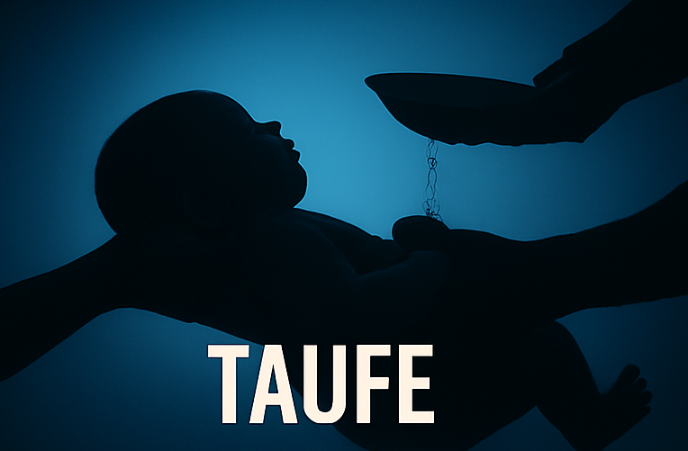

Ich war skeptisch.
Als KI-Tools anfingen, in meiner Bubble aufzutauchen, hatte ich dieselbe Reaktion wie die meisten Kreativen: Das ersetzte irgendwann meine Arbeit. Ich habe mich dagegen gesperrt. Nicht laut, aber intern. Ich wollte lieber alles „von Hand" machen — jedes Frame selbst geschnitten, jede Farbe selbst graded, jede Idee selbst entwickelt.
Das Umdenken kam nicht über Nacht. Es kam, als ich zum ersten Mal ehrlich mit mir war: Ich verbrachte 60 % meiner Arbeitszeit mit Dingen, die nichts mit Kreativität zu tun hatten. Varianten exportieren. Untertitel manuell eintippen. Thumbnails in acht verschiedenen Größen neu arrangieren. Das war kein kreativer Prozess — das war Verwaltung.
KI hat mir nicht die Kreativität abgenommen. Sie hat mir die Zeit zurückgegeben, um kreativ zu sein.
Was sich konkret geändert hat
Heute sieht mein Workflow anders aus als noch vor zwei Jahren. Nicht weil ich Abkürzungen nehme, sondern weil ich verstanden habe, welche Aufgaben mein Kopf braucht — und welche nicht.
- Ideenentwicklung: KI dient mir als Sparringspartner. Ich habe eine Idee, werfe sie rein, lasse sie brechen, baue sie neu. Das ist kein Ersetzen — das ist Schärfen.
- Research und Skripte: Was früher Stunden dauerte, ist jetzt ein Ausgangspunkt in Minuten. Ich nehme 10 %, verwerfe 90 % und schreibe den Rest selbst. Das Verhältnis hat sich verändert, nicht der Anspruch.
- Visuals und Thumbnails: KI-generierte Moodboards als Basis. Kein Ergebnis geht raus, das nicht von mir gefiltert wurde. Aber ich muss nicht mehr bei Null anfangen.
- Nachbearbeitung: Automatisierte Erstcuts, KI-Transkripte, Auto-Untertitel. Alles landet trotzdem nochmal bei mir — aber ich schaue auf ein fast fertiges Produkt, nicht auf ein leeres Projekt.

Der Fehler, den die meisten machen
KI als Endprodukt benutzen. Output raus, posten, fertig. Das funktioniert kurzfristig. Langfristig erzieht es die Audience, dich als generisch wahrzunehmen — weil du es bist.
Mein Ansatz: KI ist immer Schicht eins. Ich bin Schicht zwei, drei und vier. Der Unterschied zwischen Content, der vergessen wird, und Content, der bleibt, ist nie das Tool — es ist die Entscheidung dahinter.
Was das für dich bedeutet
Wenn du als Creator noch nicht mit KI arbeitest, verlierst du gerade Zeit. Nicht weil die Tools magic sind — sondern weil deine Konkurrenz dieselbe Qualität in der halben Zeit produziert. Das ist keine Meinung, das ist Arithmetik.
Fang klein an. Nimm eine Aufgabe, die du hasst, und frag: Kann eine KI das 70 % gut machen? Wenn ja — übergib es. Nimm die freie Zeit und investiere sie in das, was kein Tool kann: deine Perspektive, deine Stimme, dein Timing.
Das Ziel ist nicht, schneller zu sein. Das Ziel ist, besser zu sein — weil du aufgehört hast, deine Energie für das Falsche zu verschwenden.